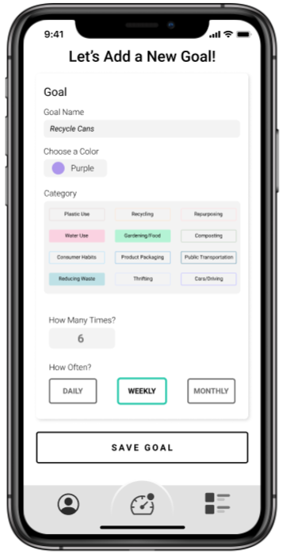

Attain is a mobile app with a simple goal: "make sustainable attainable". Put simply, we set out to create a way to make leading a more sustainable lifestyle more accessible to everyday people. Attain is a mobile app designed to help users make more environmentally conscious decisions and take easy action steps towards a more sustainable lifestyle. We started with only a basic idea of what features the app should include. We knew a mechanism for allowing users to set and track goals could be helpful. We also thought that some users may appreciate finding a sense of community and accountability from others through the app.
A major goal of this class was to learn and implement the Lean UX process. Lean UX has its genesis as a combination of three established concepts in product development: UX, Lean Startup, and Scrum.
UX(User Experience Design): the practice of designing digital systems with the user at the center of all decisions
Lean Startup Method: method based on constant creation and testing to validate assumptions
Scrum: a framework for agile software development that focuses on continuous discovery and delivery.
A foundation of Lean UX is the concept of assumptions. Team members should feel free to share any assumptions and create initial ideas based on those assumptions. Every assumption the team makes needs to be validated with users. Lean UX is an approach to interaction design focused on efficiency and validating assumptions as quickly as possible. To learn Lean UX, we first read the book "Lean UX: Design Great Products with Agile Teams" by Jeff Gothelf and Josh Seiden. It consists of a cycle of assumptions, testing, and discoveries. At the center of the Lean UX Process is the concept of an MVP or Minimum Viable Product. To create an MVP, we must think "what is the least amount of work we can out in to make the next discovery." It is important to note that this is about efficiency, not laziness. While Minimum Viable Product may sound like it has to be a product that is ready for launch in its simplest form, in Lean UX MVPs are created throughout the process in many different forms. An MVP can be a paper sketch, wireframe, low-fidelity prototype, high-fidelity prototype, developed product, or anything that the team can use to test with users and make discoveries. The Lean UX process is very structured, with scheduled "Sprints, " consistent meetings, and predetermined activities for each week. In this class, Lean UX had to be adapted to fit our unique situation. One of the core components of Lean UX is the idea of cross-functional teams, meaning teams consist of members from all departments who would have a stake in the product.
A foundation of Lean UX is the concept of assumptions. Team members should feel free to share any assumptions and create initial ideas based on those assumptions. Every assumption the team makes needs to be validated with users. Lean UX is an approach to interaction design focused on efficiency and validating assumptions as quickly as possible. To learn Lean UX, we first read the book "Lean UX: Design Great Products with Agile Teams" by Jeff Gothelf and Josh Seiden. It consists of a cycle of assumptions, testing, and discoveries. At the center of the Lean UX Process is the concept of an MVP or Minimum Viable Product. To create an MVP, we must think "what is the least amount of work we can out in to make the next discovery." It is important to note that this is about efficiency, not laziness. While Minimum Viable Product may sound like it has to be a product that is ready for launch in its simplest form, in Lean UX MVPs are created throughout the process in many different forms. An MVP can be a paper sketch, wireframe, low-fidelity prototype, high-fidelity prototype, developed product, or anything that the team can use to test with users and make discoveries. The Lean UX process is very structured, with scheduled "Sprints, " consistent meetings, and predetermined activities for each week. In this class, Lean UX had to be adapted to fit our unique situation. One of the core components of Lean UX is the idea of cross-functional teams, meaning teams consist of members from all departments who would have a stake in the product.
In Sprint 1, my team set out to establish what our app would be and how we would get there. In the Lean UX process, Sprint 1 should be used to getting ideas out on the table, creating low-fidelity MVPs, and validating the teams initial assumptions. Throughout Sprint 1, we established our initial thoughts, designed collaboratively, interviewed 4 users, conducted regular stand-up meetings, and concluded with a retrospective meeting.
Design Week 0: Problem Statement, Assumptions, Proto-Persona 1, Product Backlog, Prioritize Backlog, Sprint Backlog
Week 1: Collaborative Design, 2 user interviews, 3 standup meetings
Week 2: Create low-fidelity prototype, 3 standup meetings, Sprint 1 retrospective meeting
During Week 0(also called Design 0) of Sprint 1, we had a number of deliverables to implement. We worked collaboratively over 2 long meetings to create the assets listed below. Thorough and diligent work were required while creating these items, as the work we did here would inform our decisions for the remainder of the Sprint and entire project.
In current digital spaces, sustainability efforts have focused primarily on simple changes such as recycling or reducing food waste. Available products suggest minimal, incremental changes that can be made, but fail to inspire lasting impacts on their users' lives. What existing products/services fail to address is the ability to spur customers to make changes to their current habits via competition, location-based information, and encouraging reminders. Our product/service will address this gap by providing a space in which customers can compete with their friends and families, and can create and work toward goals that affect their day-to-day rhythms and enhance their lives. Our initial focus will be addressing how users can make lasting lifestyle changes on our app.
In Week 0, it was important to discuss our assumptions about what our product should be and come to a shared understanding. Using the templates provided in Gothelf and Seiden's Lean UX: Designing Great Products with Agile Teams, we compiled a list of several business assumptions and user assumptions. We utilized these lists as a guide for creating our first proto-persona and our product backlog.
One of our early assumptions was that our target user would be somewhere between a beginner and intermediate user. This person would have an understanding of environmental issues impacting the world and some interest in improving their own sustainability habits. With these thoughts in mind and our user assumptions as a guide, we created our first proto-persona, Tim. Tim is representative of many students who have an interest in living more eco friendly, but feel like they lack the time, knowledge, or community to make changes that will have a real impact.
Keeping our problem statement, assumptions, and proto-persona in mind, we needed to create a "Product Backlog" of all the features we felt we needed in the app.
We started by filling out an affinity map to give each team member a chance to brainstorm ideas. The main goal of this affinity map was to logically connect business assumptions to user assumptions and brainstorm features that could be implemented to solve problems that arise.
Using our affinity map as a guide, we put each feature into sentence form based on the template provided in Gothelf and Seiden's Lean UX: Designing Great Products with Agile Teams. We then prioritized the 7 statements into the order we felt they needed to be done, based on initial assumptions.
Our Sprint 1 Backlog was a condensed version of our product backlog. We chose the top features that we could reasonably implement during the 2 remaining weeks of Sprint 1. We went with our first 3 features which were: encouraging reminders, an activity feed, and a "search by location" service. We decided to focus on these features because we felt they were the most crucial features to implement to create an MVP that was reflective of our initial ideas for the app.
One of my team's main goals for Sprint 1- Week 1 was to create an MVP that implemented the features from our Sprint 1 Backlog. Using Miro, we created a low-fidelity wireframe, including any screens that we felt were necessary to make it minimally viable. As was anticipated in Week 0, we implemented an encouraging reminders feature and an activity feed. The encouraging reminders were implemented through screens with encouraging messages that come up when returning users first open the app and through occasional push notifications that remind users how easy it is to make a difference.
Because sustainability is a broad domain, with many different sub-topics, we quickly realized that to keep users from being overwhelmed with content, we would need to have them chose the topics that interested them and use that information to customize their experience throughout the app. This made us realize that wireframing the entire onboarding experience would be necessary to create an MVP, which veered away from our Sprint 1 Backlog. We also realized, through user interviews, that users would likely not find value in the "search-by-location" feature listed in our Sprint 1 Backlog. This was an important learning moment for our team as we realized that Lean UX is a framework, not a strict, step-by-step list of rules. Teams may need to make adjustments to the process based on their product's individual needs. For us, Gothelf and Seiden's product backlog template wasn't structured in a way that allowed us to list certain features that were crucial to our MVP. We adapted and adjusted our methods to keep us on track with this face-paced and strenuous process.
In Sprint 1- Week 1, we interviewed 2 potential users. Our main goal was to get a gauge of each person's current aptitude for sustainability, their desire to be more sustainable, what barriers prevented them from living more sustainably, and what would be most helpful to them on this journey. Our main takeaways from these interviews were as follows:
In Sprint 1- Week 2, we made a few tweaks to our wireframe based on information from our user interviews and started working on a low-fidelity interactive prototype. The overall sections of the app that we were working on did not change in week 2. Our focus was on increasing the fidelity of the sections we already had.
In Sprint 1- Week 1, we interviewed 2 potential users. Our main goal was to get a gauge of each person's current aptitude for sustainability, their desire to be more sustainable, what barriers prevented them from living more sustainably, and what would be most helpful to them on this journey. Our main takeaways from these interviews were as follows:
In Sprint 1, my team set out to establish what our app would be and how we would get there. In the Lean UX process, Sprint 1 should be used to getting ideas out on the table, creating low-fidelity MVPs, and validating the teams initial assumptions. Throughout Sprint 1, we established our initial thoughts, designed collaboratively, interviewed 4 users, conducted regular stand-up meetings, and concluded with a retrospective meeting.
Design Week 0: Problem Statement, Assumptions, Proto-Persona 1, Product Backlog, Prioritize Backlog, Sprint Backlog
Week 1: Collaborative Design, 2 user interviews, 3 standup meetings
Week 2: Create low-fidelity prototype, 3 standup meetings, Sprint 1 retrospective meeting
During Week 0(also called Design 0) of Sprint 1, we had a number of deliverables to implement. We worked collaboratively over 2 long meetings to create the assets listed below. Thorough and diligent work were required while creating these items, as the work we did here would inform our decisions for the remainder of the Sprint and entire project.
Current applications in the field of sustainability have focused primarily on simple changes such as recycling or reducing food waste. Available products suggest minimal, incremental changes that can be made, but fail to inspire lasting impacts on their users lives. What existing products/services fail to address is the ability to spur customers to make changes to their current habits via a sense of community, convenient resources, and encouraging reminders. Our product will address this gap by providing a space in which customers can discover resources, create and work toward goals that effect their day-to-day rhythms and enhance their lives, and can experience a sense of community. Our initial focus will be addressing how users can make lasting lifestyle changes on our app.
After our 4 user interviews during Sprint 1, we realized there may be more of a place for more intermediate to advanced users in our app. It became clear that even people with a clear interest in living sustainably and an advanced level of knowledge, still need help taking action steps. We found that these users would likely benefit from the extra encouragement and sense of community found in our app. Liz is representative of the users who have a passion for sustainability but still have barriers keeping them from getting where they would like to be. Our hope was that this group of users would find joy in helping other users in the community. For this reason it became clear to us that our app needed to target both users like Tim and users like Liz.
To revalidate our product backlog, we first looked at what still needed to be done from the original version. While we did implement the first 2 items on the list during Sprint 1, we knew there was still some revisions left for the. So, we left those items on the list to keep them at the top of our minds. Based on user feedback from Sprint 1, we removed the "search-by-location feature from the backlog. Once we prioritized the features in our product backlog, our Sprint 2 backlog was also complete, considering all of these features needed to be implemented in this final sprint.
Sprint 2- Week 1 focused on revalidating our wireframe inside of Miro. With our learnings from Sprint 1 and our revalidated deliverables from Sprint 2- Week 0, we assessed our wireframe and certain key functions of the app. Most of our changes were made in the form of rethink the way that user's would input information in the onboarding process and creating a mechanic for how users would create goals within the app. A major change we made was to reduce the number of tabs on the activity feed down to 2. Now a user can interact with their "community" and their "friends" rather than having that plus tabs for the user's state and country. This change was made because users told us they would be overwhelmed if the activity feed had too many tabs.
At this point, our low fidelity prototype was coming along well. Notably, we had begun creating a consistent look and feel across all sections of the app. We also established 12 topics in sustainability for users to chose to focus on. During the onboarding process, we ask the user to tell us their level of experience and up to 6 topics they are interested in. We assigned colors to each of these topics and those colors are used to identify the topic throughout the app. This color coding can be seen in the cards on the users dashboard and the tags associated with messages in the activity feed.
In Sprint 2, we interviewed 4 potential users. We followed the same methods from Sprint 1 with main change being that we showed are users an interactive prototype rather than a wireframe. We received a lot of validation on our assumptions and gained information that made us revisit some of our initial ideas. Overall we received great feedback that allowed us to refine our prototype until we reached a place we were very proud of. The main takeaways from these sessions are as follows:
In Sprint 2- Week 2 our prototype really started to feel like a high-fidelity product. We implemented any features from the Sprint 2 Backlog that had not made it into prior iterations. Notably, we implemented the feature that allows users to add new goals. Our meticulous crafting of this process through brainstorming, sketching, and iteration created a very seamless experience for our users. A major step we took during this week was altering the colors associated with each topic. The previous iteration had colors that were very saturated and were on a wide spectrum of cool and warm colors. According to our user feedback, these colors were a bit much and distracted from the apps content and main color scheme. For this reason, we changed each color to a pastel and kept most of them as cool colors, with only a slight dip into warm colors. When we implemented this change, it was clear to see that users thought our app was more calming and the important features of the design stand out. Along with the changing colors, each dashboard card was switched to having it's border be the topic's color, rather than the background, to ensure that we had full control over maintaining proper contrast.
Another key usability improvement we made during this week was allowing more options in the Activity Feed. Users now are given a simplified view of activity and messages with no tags by default. In the menu the user is given the option to turn on a filter that shows only messages from their topics and turn on notification. Each of these controls can be changed separately for each tab. The final feature we implemented was mechanism for logging data to track the progress of your goals. After long deliberation, we decided that extra screens and advanced steps would create difficulty for our busy users. So, we implemented a modal window that pops up above the goals page when the user taps that goal, allowing the user to log progress without ever leaving the dashboard.
For our third and final proto-persona, Kel, we think we found a sweat spot between Tim and Liz. Kel is able to represent a wide group of users who have an interest in sustainability and some knowledge, but need a simple way to learn more about the topic and how they can help the environment.
COVID-19 created a new set of challenges that we had never faced as designers. While we all had prior experience with similar projects conducted fully in-person, we had no experience completing an interaction design project 100% virtually. In addition to the virtual environment, our entire team had a heightened level of stress throughout the semester due to the uncertainty of the world around us and the added pressure of online classes in our previously fully in-person program. But with immovable deadlines and the reality that online collaboration will become increasingly more important, we knew we had to adapt quickly and produce a high-caliber project despite the unique challenges. We hunkered down and delivered a user-friendly, beautiful, and thoughtful design. I feel I grew immensely from these challenges and became far more prepared for the future and far more capable as a designer and a teammate.
Attain started with a simple goal of creating a way to make leading a more sustainable lifestyle more accessible to everyday people. We made this happen by following the Lean UX process. Through two fast-paced and intensive sprint cycles we brainstormed, researched, iterated, prototyped, tested, and refined our mobile app. This process lead to an app that is not designed based on the whims or assumptions of designers, but one that designed based on the researched and validated needs of users.
View the interactive prototype